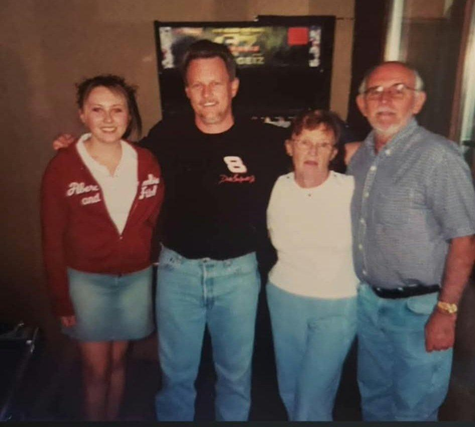

No individual portrait identified; family group photograph below.
Ralph Hall
Birth and death dates not yet established
Missouri · associated with Judith Mae “Judy” Palmer
Working identity: Ralph Hall, Judy’s companion in the Rockaway Beach area
Quick Facts
Born
Not yet established. A people-search listing gives January 1940; this is an unverified lead only.
Died
Unknown
Last known area
Rockaway Beach, Taney County, Missouri (reported association)
Buried
Unknown
Occupation
Unknown
Family Connections
Parents
Not yet identified. The available family information and research records reviewed so far do not establish Ralph’s parents. No same-name parent candidates have been added without evidence.
Companion
Judith Mae “Judy” Palmer (9 February 1939 – 7 June 2006). Family recollection identifies Ralph as Judy’s companion while she lived in Missouri, for approximately 10–15 years. The family accepts Ralph Hall as the working identity based on the shared telephone listing. Their legal marital status and exact relationship dates have not been established.
Life Story
Ralph Hall is the working identity for the man remembered by Judy Palmer’s family as her companion in Missouri. A reverse-telephone people-search listing associates a Ralph Hall and a Judith Clark with the same Rockaway Beach-area telephone listing. The family accepts Ralph Hall as the working identity for Judy’s companion. The listing is a data-broker result, not a primary record; it does not establish his birth, death, parents, relatives, property ownership or legal relationship to Judy. A January 1940 birth-month/year shown by the aggregator is an unverified lead, not an established birth date.
Amanda identified a family photograph as showing herself, her father Ron, Judy, and Judy’s companion Ralph. This is a family identification of the people pictured; the date, place and photographer are not recorded. The original image remains in Judy’s archive and is linked here rather than duplicated.
Family Photograph

Amanda identified the people pictured as herself, her father Ron, Judy, and Judy’s companion Ralph. The original image is stored in Judy’s photo archive; it is linked here without creating a duplicate.\n
Research Status
Working identification, not a completed biography. The name Ralph Hall is being used for this research profile based on the family’s identification and the matching telephone-number listing. Birth and death records, parents, siblings, marriages, children, property ownership, burial information and additional photographs remain research targets. A public search did not produce an identity-secure obituary or independently verified vital record. A second targeted search of family names, likely locations, and 1950 census indexes still has not identified Ralph's parents, siblings, spouse(s), or children. Several same-name Ralph Halls were excluded because their dates and documented lives do not match. The names shown as 'relatives and associates' by the data broker are not relationship evidence and have not been entered as family. Taney County’s official Recorder of Deeds says land records from 1894 onward are searchable through its Laredo subscription service or Tapestry; no property ownership has yet been established. Do not treat unknown details as facts.
Sources & Evidence
Amanda Brewster Beisel, “Brewster Cousins” family chat, 7 October 2026: identifies Ralph as Judy’s boyfriend for roughly 10–15 years and identifies the family photograph showing Amanda, Ron, Judy, and Ralph. Transcribed in Homer folder family-chat notes.
Free People Search reverse-telephone result: associates a Ralph Hall and Judith Clark with the same Rockaway Beach-area listing and displays January 1940 for Ralph. This commercial data-broker result is an identity lead only; it does not prove his birth date or family relationships. The phone-number-specific lookup URL and contact details are intentionally not reproduced.
Taney County Recorder of Deeds: official description of land-record holdings and Laredo/Tapestry search access. This explains the next property-record route; it is not evidence that Ralph owned property.